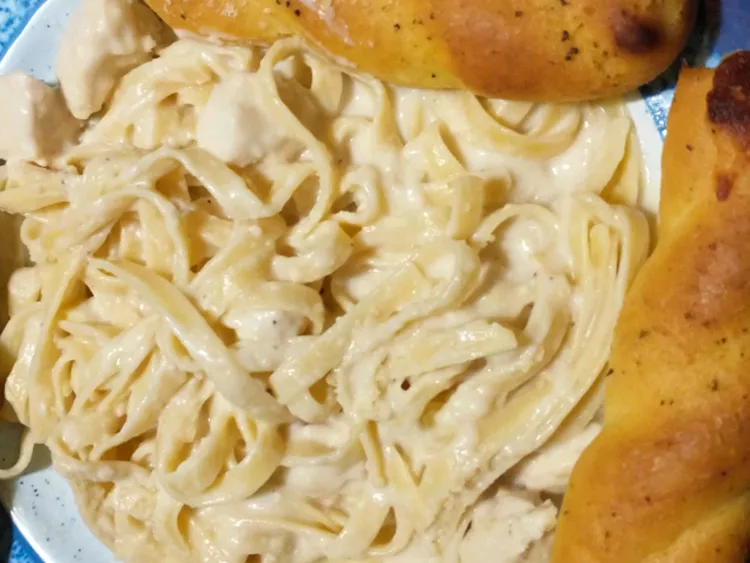

Slow Cooker Chicken Alfredo

Amazing Slow Cooker Chicken Alfredo
Try this recipe for super easy chicken made with tasty Alfredo sauce, Swiss cheese and Parmesan cheese. It is very good served over egg noodles or rice.
Ingredients
- 4 skinless, boneless chicken breast halves - cubed
- 2 (16 ounce) jars Alfredo pasta sauce
- 4 slices Swiss cheese
- 3 tablespoons grated Parmesan cheese
- 1 teaspoon garlic powder
- salt and pepper to taste
Directions
- In the crock of a slow cooker, stir together the chicken cubes and Alfredo sauce. Cover, and cook on Low for 2 hours.
- Add Parmesan cheese and Swiss cheese; cover and cook for another 30 minutes, or until chicken is cooked through.
- Season with garlic powder, salt and pepper and stir in cheeses before serving.